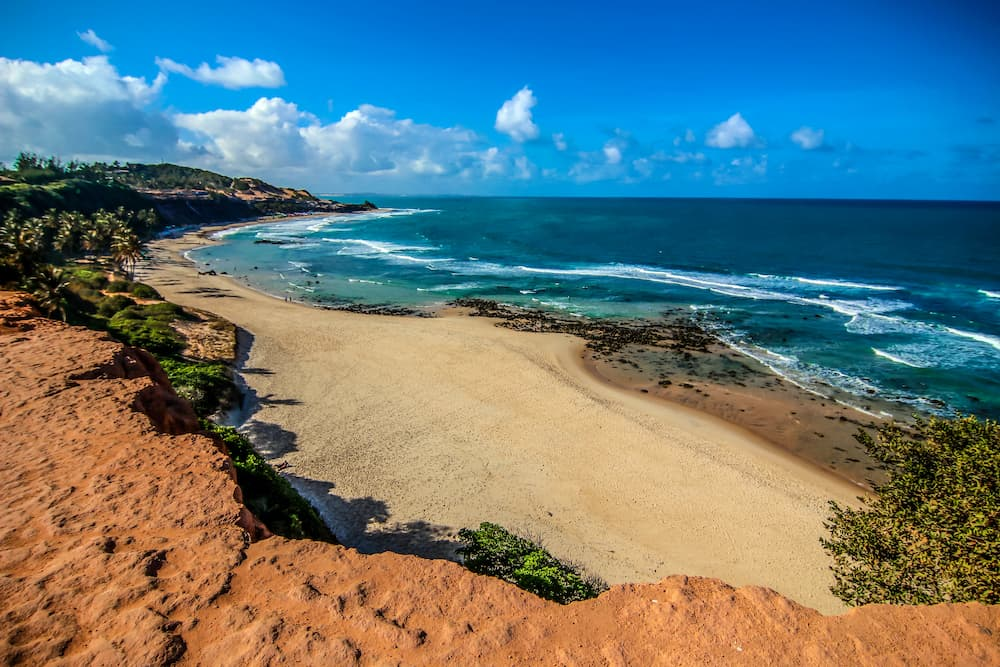

Aventura além dos seus sonhos
Você já sentiu aquele friozinho na barriga só de imaginar o próximo destino? A emoção de preparar as malas, de planejar roteiros, de sonhar com sabores, paisagens e culturas completamente novas? Aqui, a viagem começa muito antes do embarque — começa com a vontade de descobrir o mundo.
Este é o nosso espaço para compartilhar experiências, roteiros personalizados, dicas preciosas e histórias que nos transformaram ao longo do caminho. Mais do que destinos, buscamos conexões. Conexões com lugares, com pessoas e com a essência de cada cultura que encontramos.
Aqui, cada viagem tem alma. Seja um café em uma ruela escondida de Lisboa, um nascer do sol no deserto do Atacama ou uma trilha nas florestas da Tailândia, cada momento carrega um sentimento único. E é isso que queremos dividir com você.
Nosso objetivo é inspirar. Te dar coragem para explorar o desconhecido, mostrar que viajar é para todos — e que o mundo está cheio de maravilhas esperando por você. Venha com a gente descobrir que, às vezes, tudo o que você precisa é dar o primeiro passo.
